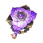
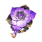
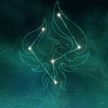

Un Yaksha y Adeptus que protege Liyue. Tambien llamado el "Gran Cazador de Demonios" o "Guardian Yaksha".
Artefacto/s recomendados
 


Atq%

Bono Anemo

Prob / Daño critico
Prob/Daño critico > Atq% > Energia%
Talentos
Pasivas
Constelación
Armas Recomendadas


Personajes compatibles